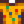

Artefaktfund
Zur Navigation springen
Zur Suche springen
| Artefaktfund | |
| Information | |
| Quelle | |
| Verkaufspreis | Unverkäuflich |
Der Artefakt Fund ist ein Artefakt-Behälter, der für 5 Omni-Geoden vom Wüstenhändler erworben werden kann. Die meisten Gegenstände, die man aus dem Artefakt-Fund erhält, sind zwar Artefakte, allerdings kann man in ihm auch den Goldenen Kürbis, Perlen und Schatzkisten finden.
Der Fund kann beim Schmied für  25 G aufgeschlagen werden, um seinen Inhalt freizulegen.
25 G aufgeschlagen werden, um seinen Inhalt freizulegen.
Inhalte
Alle nachfolgenden Gegenstände haben die gleiche Wahrscheinlichkeit sich in dem Artefakt-Fund zu befinden.
Schneiderei
Artefakt Fund kann in der Spule der Nähmaschine genutzt werden, um das nicht färbbare T-Shirt herzustellen.
- Unisex Version: 
Geschichte
- 1.4: Eingeführt.